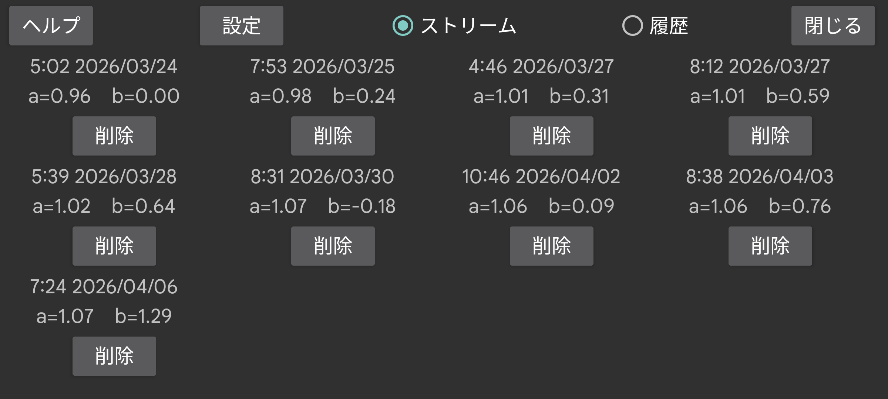

このセンサーで行われた校正を表示します。各校正は、行われた時刻と、血糖値とセンサー血糖値の関係の傾き (a) および切片 (b) で構成されます:
血糖値 = a × センサー血糖値 + b
左メニュー → 設定 → 校正で「傾きを変更」が設定されていない場合、a = 1 となります。したがって b のみが決定されます。
ストリーム: ストリーム値の校正を表示します。ストリームは測定の瞬間に表示される値で、アラームやブロードキャストに使用されます。
履歴: 履歴値の校正を表示します(FreeStyle Libre と CareSens Air のみで存在)。履歴値は、Librelink や CareSens Air アプリで表示されるように、後から構築された修正値です。
校正済み曲線の表示は、右中メニューで「ストリーム」と「履歴」の前にあるスイッチでオン/オフを切り替えられます。
校正をタッチすると校正時刻に移動します。「削除」をタッチすると校正が削除されます。
設定: 左メニュー → 設定 → 校正へ進むもう一つの方法です。